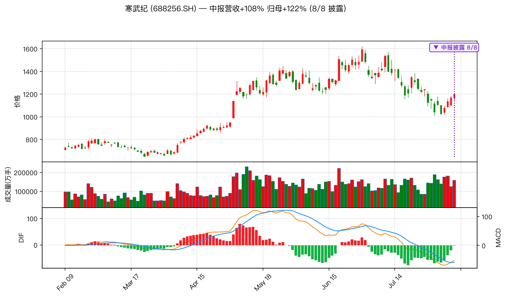
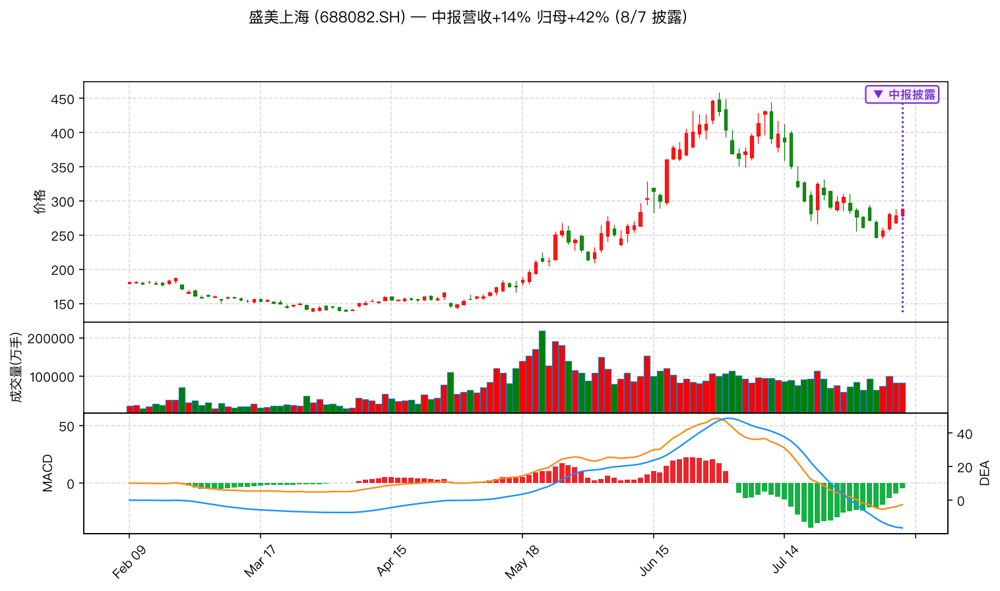
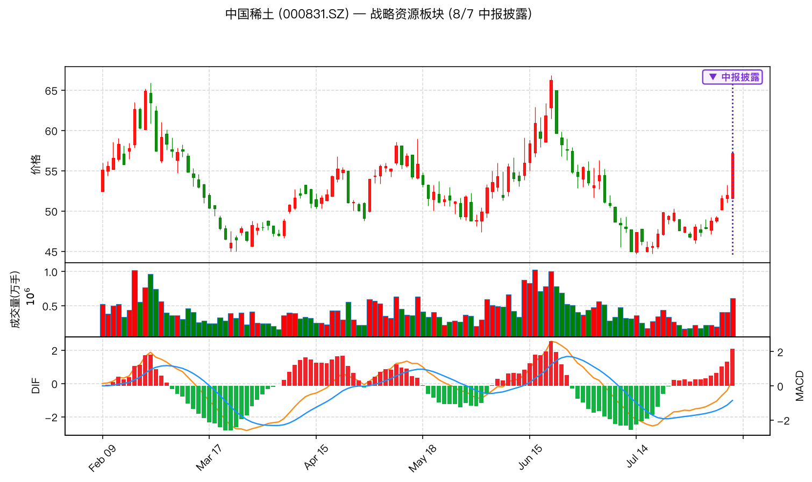
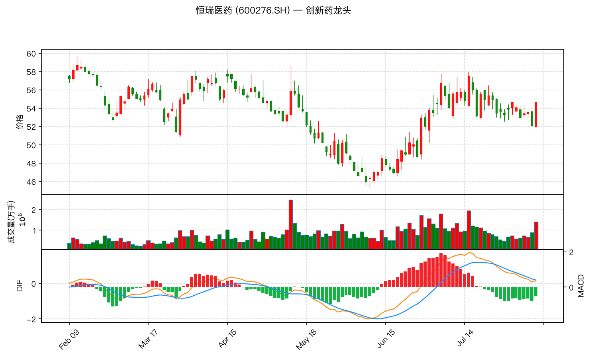
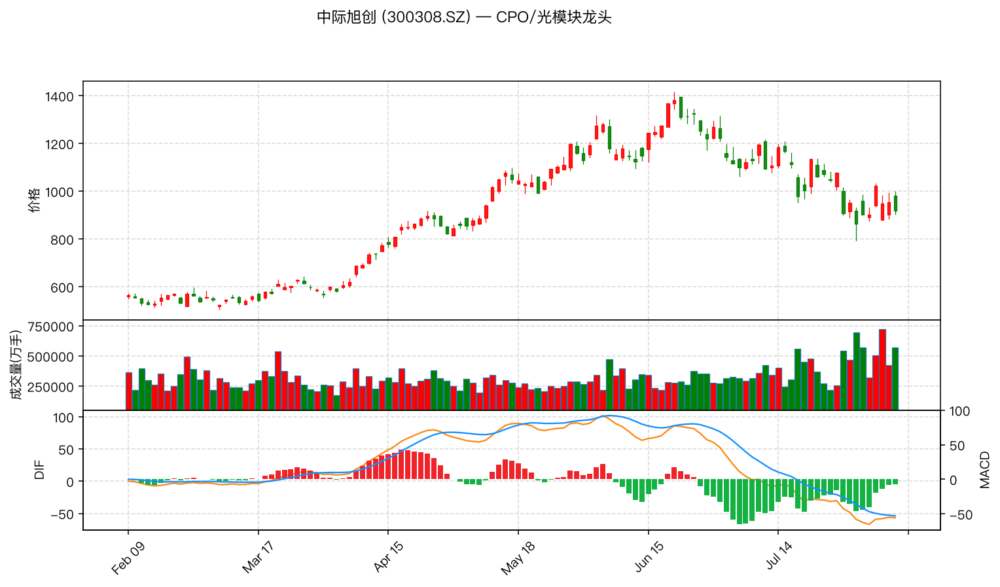
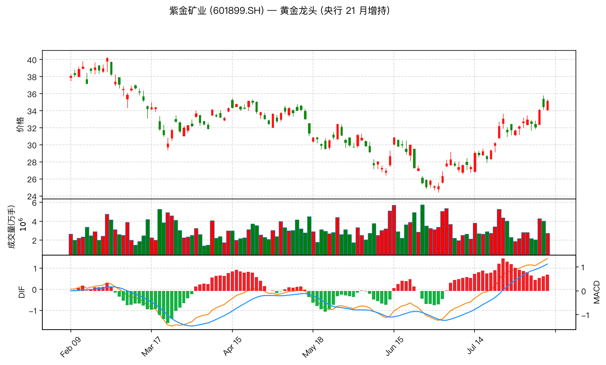
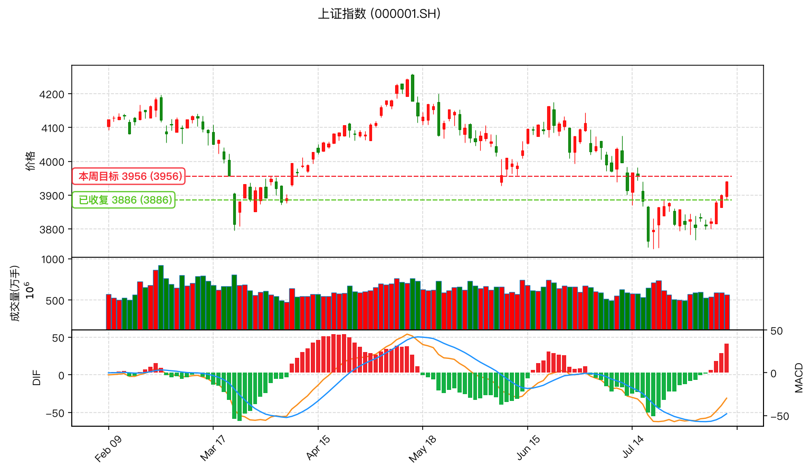
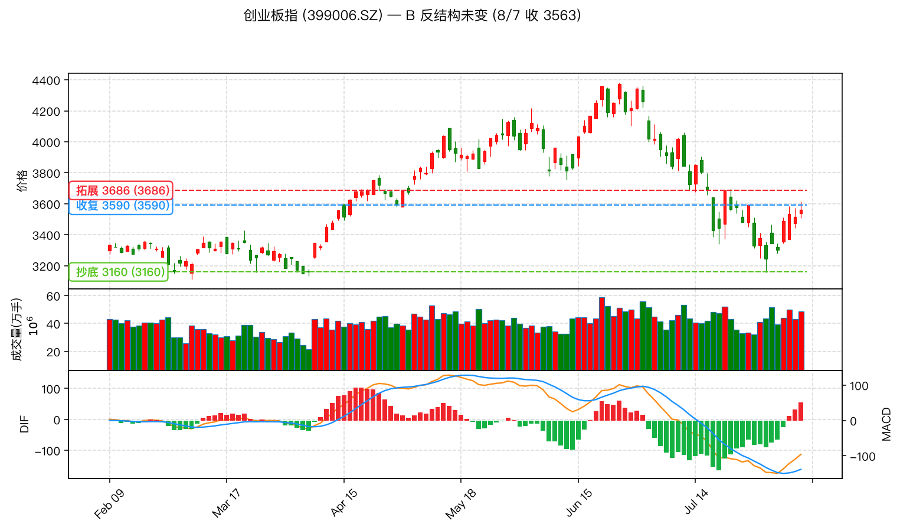

偏多 B 反结构未变 关注板块轮动
wu2198 (UID 1216826604) 在 8/7 周五的交易时段内连续发布操盘观点,核心立场偏多但保持谨慎, 强调"周线和日线均维持 B 反格局,即使有反复格局未变"。本文基于最近一天 (含 8/7 交易日和 8/8 早间速报) 的 35 条微博, 提取最具操作价值的内容,浓缩为 3 大板块 + 6 只个股 + 大盘关键点位。
短线折腾一下不要紧,周线和日线均维持 B 反格局,明白 666。 — wu2198, 2026-08-07 14:35
今天收在 3940 点,下周会继续……大盘指数继续是 3956 方向。 — wu2198, 2026-08-07 14:48 / 15:01
创业板指数自上周给大家分析的 3160 反击点 (实际试 3158) 之后,等待收复 3590, 收复之后才向 3686 方向拓展。今天虽然试 3613.87 点,但收在 3563 点未收复 3590, 因此下周即使有反复,其 B 反的结构未变。 — wu2198, 2026-08-07 15:18
美国股市周五晚小幅上涨,科技股领涨。收盘道指涨 151 点,纳指涨 342 点、标普涨 47 点。 — wu2198, 2026-08-08 07:14
美国市场科技股涨幅领先,康宁, 高通, 博通, 英特尔, 英伟达等领先, 纳指目前涨 256 点。 — wu2198, 2026-08-07 21:37
所有 K 线图均采用近 180 日线绘制, 包含 K 线 + 成交量 (万手) + MACD (DIF/DEA/MACD 柱); 关键点位在 K 线图上以虚线标出, 标签居左。数据源: tushare 1.4.29。

博主关联度: 博主 8/8 早 9:44 单独发布中报数据, 作为板块核心标的关注;
美股映射: 英伟达 / 博通 / 英特尔 8/7 领涨纳指, AI 算力主线海外共振。
技术面: 8/7 收 1199.93, 较 6/15 高点 1600 回调约 25%, 在 5/12-5/18 跳空高开支撑位附近企稳;
MACD 在零轴下方收敛, DIF/DEA 有金叉迹象。
关键位: 短期压力 1300 / 1400, 支撑 1050 / 1000。

博主关联度: 博主 8/7 19:46 与中国稀土同步转发中报; 半导体设备国产替代主线。
技术面: 8/7 收 288.0, 从 6/15 高点 450 回调约 36%, 跌幅较深;
但中报归母 +42% 确认业绩支撑, MACD 在零轴附近钝化。
关键位: 压力 320 / 360, 支撑 250 / 230 (前低)。

博主关联度: 与盛美上海合并转发, 体现对"战略资源 + 高端制造"双主线的关注;
配合央行连续 21 月增持黄金的避险信号。
技术面: 8/7 收 57.19, 较 6/15 高点 65 回调约 12%;
MACD 已在零轴下方金叉向上, 红柱出现, 短期反弹动能较强。
关键位: 压力 60 / 65, 支撑 50 / 45。

博主关联度: 板块龙头, 虽未点名, 但博主对"创新药涨停潮 + 龙头改写新高"的描述指向此类大票。
技术面: 8/7 收 54.62, 5 月底以来在 46-58 区间宽幅震荡;
MACD 在零轴附近反复, 7 月中后绿柱缩短, 接近底部钝化。
关键位: 压力 58 / 60, 支撑 50 / 46。

博主关联度: 与 PCB / 存储 / 覆铜板 同列博主 8/7 强势板块清单;
CPO 是 AI 算力最直接受益环节。
技术面: 8/7 收 919.87, 较 5 月底 1400 高点回调约 34%;
MACD 在零轴下方运行, 但绿柱在缩短, 接近底部区域。
关键位: 压力 1000 / 1100, 支撑 800 / 750。

博主关联度: 博主 8/8 10:28 转发央行黄金数据, 黄金板块最大受益方;
避险 + 战略储备双重逻辑。
技术面: 8/7 收 35.15, 创近期新高, 6 月底以来强势反弹近 30%;
MACD 在零轴上方发散, 红柱放大, 趋势确立。
关键位: 压力 36 / 38, 支撑 32 / 30。

沪指 8/7 收 3940.04, 较 7 月低点反弹超 4%; 关键位 3886 已收复, 短期目标 3956。 博主多次重申 "注意热点节奏及仓位控制", 即使偏多也强调反复风险。

创业板 8/7 收 3563.12, 较 7 月低点 3158 反弹约 12.8%; 距离 3590 收复位仅差 0.75%, 一旦收复将向 3686 拓展。博主原话 "B 反结构未变", 短期操作关注 3590 突破信号。